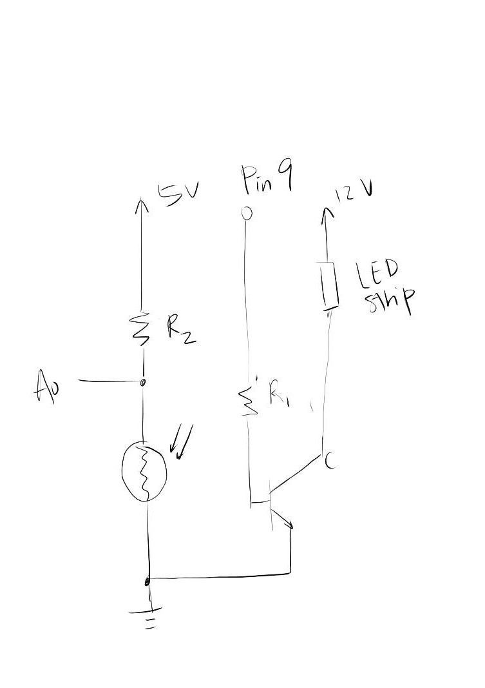
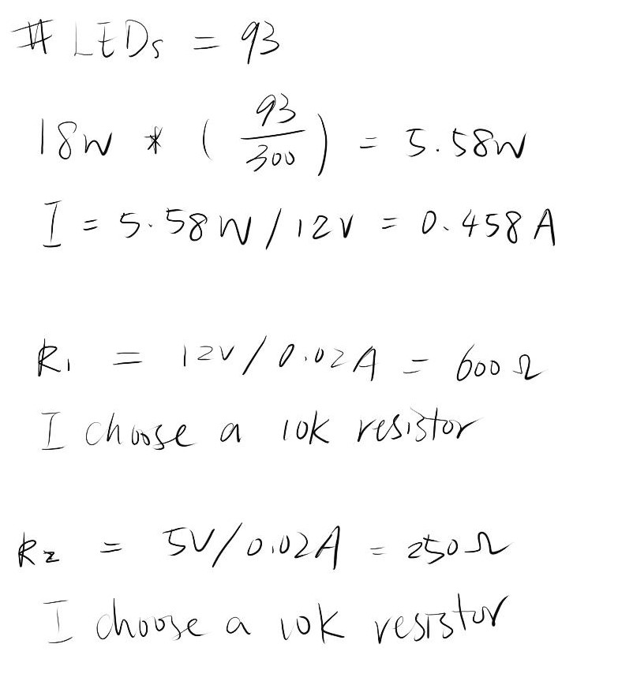

Alice's Assignment 4!
Schematic
In this schematic, a transistir is connected to pin 9, with one end connected to a resister controlling the current, and the other one to a LED strip. The LED strip is connected to a 12v power source. A light sensor and resistor is connected to 5V power source, and voltage divided to input A0.
Calculations
There are in total of 93 LEDs. I calculated the current, 0.458A that the circuit could hold. I used the ohm's law to calculate the appropriate resistor to use. The resistor should be at least 600 and 250 ohm. I chose 10k ohm resistors for this assignment.
Circuit

I used an Arduino board control the light sensor and LEDs. The Arduino board is connected to my computer for power source. Pin 9 is connected to the resistor and LEDs, and the power pin (5v) is connected to the light sensor. The light sensor is voltage diverged to input pin A0.
Code
/*
Alice Li
Assignment #4
HCDE 439
Feb 5th, 2019
*/
const int analogInPin = A0; // Analog input pin that the potentiometer is attached to
const int analogOutPin = 9; // Analog output pin that the LED is attached to
int sensorValue = 0; // value read from the pot
int outputValue = 0; // value output to the PWM (analog out)
void setup() {
// initialize serial communications at 9600 bps:
Serial.begin(9600);
}
void loop() {
// read the analog in value:
sensorValue = analogRead(analogInPin);
// map it to the range of the analog out:
outputValue = map(sensorValue, 400, 1023, 0, 255);
// change the analog out value:
analogWrite(analogOutPin, outputValue);
// print the results to the Serial Monitor:
Serial.print("sensor = ");
Serial.print(sensorValue);
Serial.print("\t output = ");
Serial.println(outputValue);
// wait 2 milliseconds before the next loop for the analog-to-digital
// converter to settle after the last reading:
delay(2);
}
Circuit Operation
This gif shows the operation of the circuit. With the first LED mapping to the light sensor, when the sensor is dark (covered), the LEDs will light up (brighter).